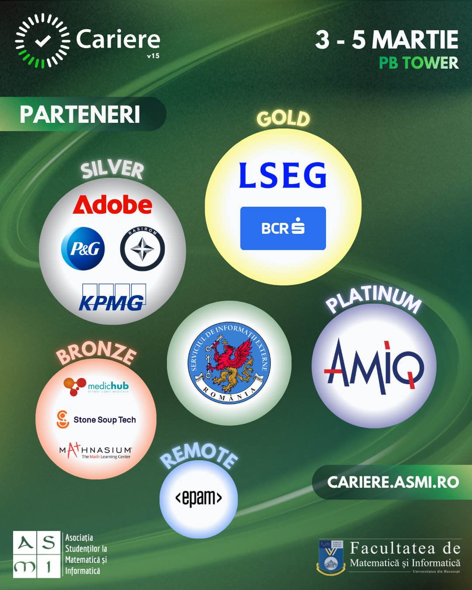
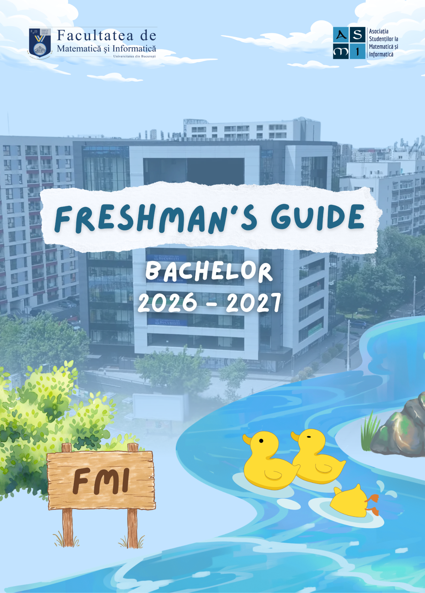
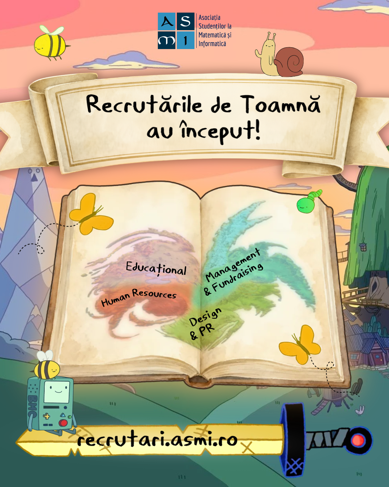
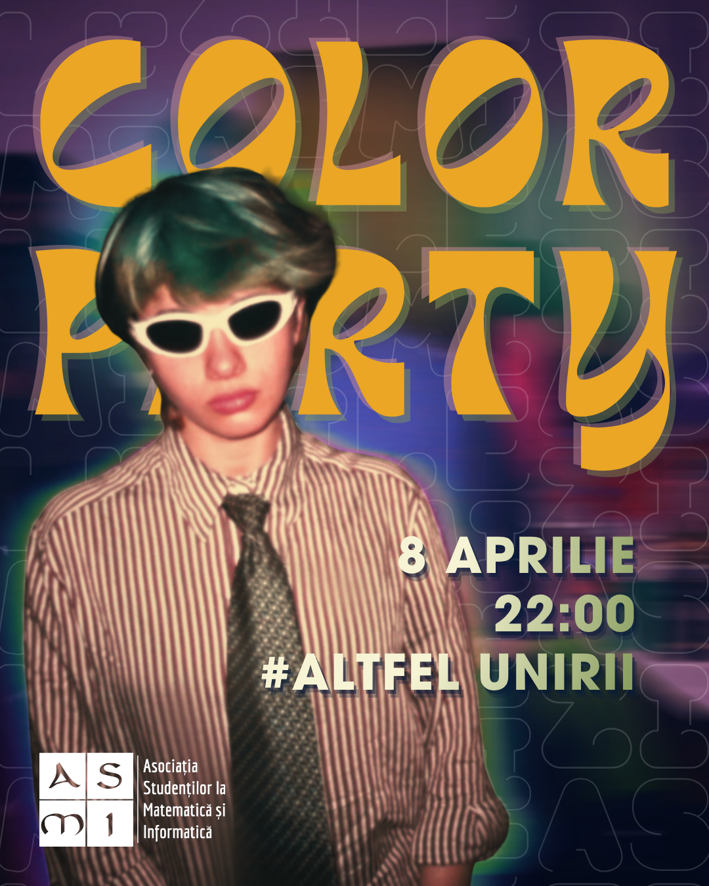
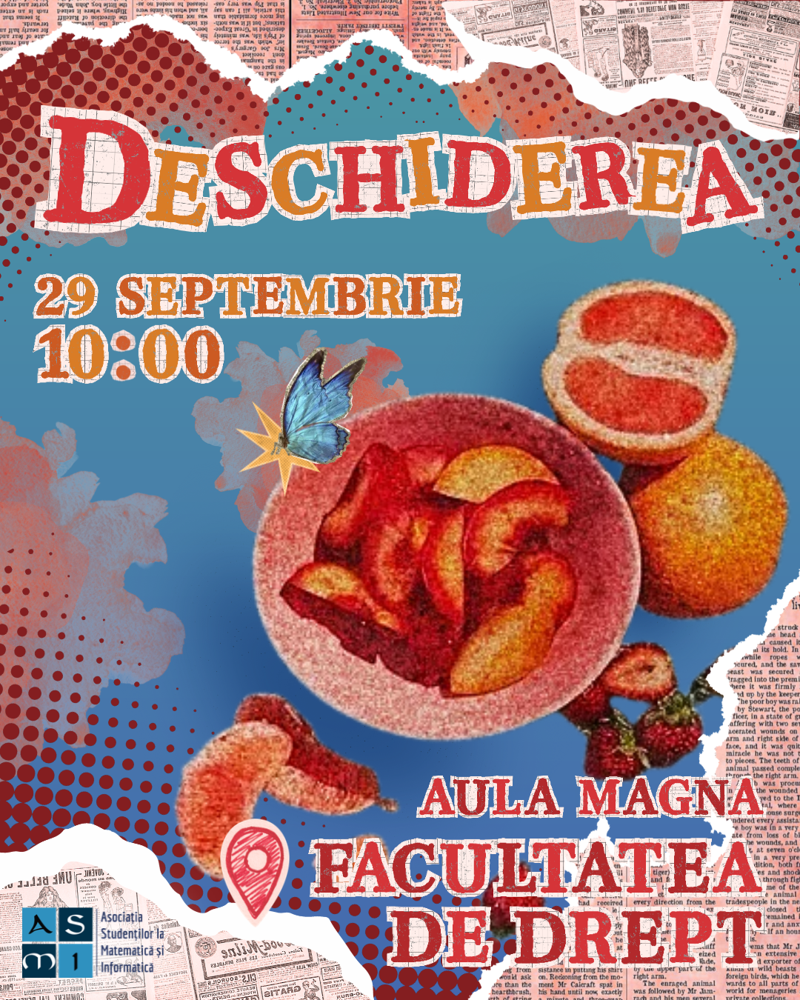

My Portfolio
About Me
My name is Chircu Andrei-Denis, but you can call me Poke. I am a second-year Computer Science student and I am driven by my passion for graphic design.
As an active member of my college student organization's Design & PR department, I have developed a sharp eye for layout, typography and color schemes by creating social media promotional materials, as well as posters and other physical media. Beyond visual design, this role has also helped me build strong collaborative skills, specifically in dealing with deadlines, teamwork, and giving and processing feedback. I have experience in Canva, Adobe Photoshop and Affinity.
Using my technical skills in HTML, CSS and JS alongside my creative skills, I have built two web projects. I am drawn to web design because it is the perfect intersection of my creative and academic background.
Web Projects
Chișinău Travel Guide
SwiftRail
Graphic Design Work

"Cariere" Main Post
Instagram post promoting a job and career fair tailored to Computer Science students
Project-specific skills:
- Following sponsor's guidelines;
- Team management.

Freshman's Guide
A selection of all the information a student may need in their freshman year of college, available in 2 languages and in both physical and digital format.
Project-specific skills:
- Managing heavy workload;
- Best practices for printing books.

"Recrutări" Main Post
Instagram post announcing an open call for volunteer recruitment in the student association.
Project-specific skills:
- Customizing a font using FontForge.

"Color Party" Post
Instagram post promoting a party.

"Deschiderea" Post
Instagram post announcing the opening ceremony of the academic year.